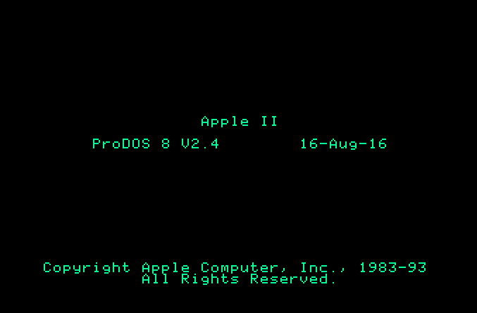

Announcing ProDOS 2.4 for all Apple II computers

New version: ProDOS 2.4.2 is available here.
Today, the 30-year anniversary of the Apple IIGS, a new version of the ProDOS operating system has been released.
ProDOS 2.4 adds new features for all Apple II computers, including the 1977 Integer ROM Apple II.
Apple IIGS features of ProDOS 2.4
- Preserves GS/OS dormant state – Now multiple ProDOS games or programs can be booted and still return to GS/OS.
- New ‘Bitsy Boot’ utility allows programs to quit to the 8-bit launcher or return to the 16-bit GS/OS Finder.
- New ‘Bitsy Bye’ program launcher is built into ProDOS 2.4 and allows users to run SYS, S16, BIN, BAS, and TXT files.
- ProDOS 2.4 includes both the 6502 compatibility of ProDOS 1.x and the slot remapping functionality of ProDOS 2.x. Now Apple II programs can use a single version of ProDOS to boot any Apple II and access all storage volumes.
- When run from the Finder, the Solid-Apple key selects whether ProDOS 2.4 will Quit to Bitsy Bye or the Finder.
- ProDOS 2.4 is smaller than ProDOS 2.0.3 and loads faster.
- The ProDOS 2.4 interrupt manager reduces latency and memory-use, resulting in faster, consistent interrupt response.
Apple II features of ProDOS 2.4
- For the first time, the features and improvements of ProDOS 2.x are available on 6502-based Apple ][, Apple ][+, and un-enhanced Apple //e computers.
- All Apple II computers with modern USB storage devices or hard drives can now support up to 14 ProDOS volumes per device.
- Unlike earlier versions of Basic.System which hang on Integer ROM Apple ][ computers. The new Basic.System 1.6 reports that ProDOS Basic requires an Apple ][+ and then quits back to the Bitsy Bye program launcher.
- ProDOS splash screen date of 16-8-16 because Woz.
Bitsy Bye program launcher
ProDOS 2.4 includes a new program launcher with many features and improvements over earlier versions of ProDOS:
- Runs on all Apple II computers and CPUs: 6502, 65c02 or 65816.
- Allows drives to be selected directly by slot using number keys 1-7.
- Allows files to be selected by typing the first letter of their filename.
- Displays and quickly scrolls through up to 2,733 files per directory.
- Displays and allows selection of all files on a drive, not just System files and directories like previous launchers.
- Displays file types and allows launching Applesoft Basic, Binary, Text exec, and GS/OS S16 files via Basic.System.
- Displays the slot and drive of each device.
- Does not abort on drive errors, but instead lists and allows launching of all readable files.
- The code and data size for Bitsy Bye is less than 1KB, with room to spare (thanks qkumba).

Bitsy Boot utility
Bitsy Boot is a small system program which allows quick and easy booting of Apple II devices in various slots:
- Displays all slots which contain active ProDOS devices.
- Allows one-press booting of slots 1-7.
- The most recently-used ProDOS device can be booted using Return or Space.
- If GS/OS was previously booted and is dormant, Open-Apple-Q or Open-Apple-Escape will quit back to GS/OS.
- Bitsy Boot takes only 1 block on disk. Code and data are under 400 bytes.

Utilities
The 140k 5.25″ disk image of ProDOS 2.4 disk also includes these useful utilities:
- New MiniBas by Usotsuki – Great for compilation disks, this tiny program can be used instead of Basic.System:
- Requires only 1 block on disk vs 21 blocks for Basic.System
- Loads and runs Binary and Basic programs launched by Bitsy Bye.
- Provides two commands:
- &”Filename” runs a Binary or Basic program.
- & by itself will quit back to ProDOS.
- Disk Imaging Programs – ADT Pro and FastDsk allow migrating data from floppy disks to modern computers.
- Disk Utilities – Verify and repair disks. View and edit disk blocks.
- File Utilities – Manage ProDOS and DOS 3.3 files and disks on any Apple II, including Integer ROM Apple ][.
- Shrinkit archive expander – Access Apple II Shrinkit archives commonly found on the internet.
Download
140k ProDOS 2.4 disk image: ProDOS_2_4-dsk
Enjoy.
-JB
John Brooks
Twitter: @JBrooksBSI